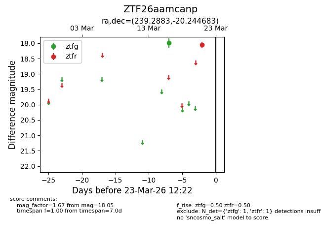
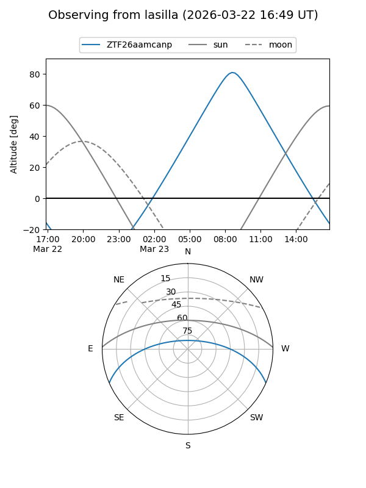
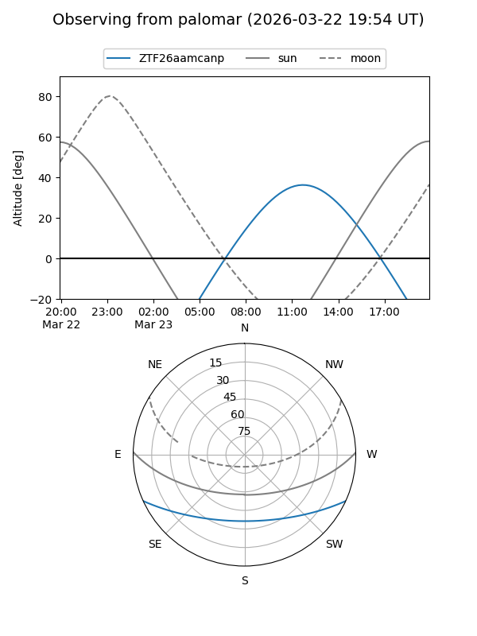

ZTF26aamcanp
Target ZTF26aamcanp at 2026-03-23 12:24
Aliases and brokers:
FINK: link
Lasair: link
ALeRCE: link
alt names
ZTF26aamcanp (ztf,fink_ztf)
Coordinates:
equatorial (ra, dec) = 239.2883,-20.24468
equatorial (HMS+DMS) = 15:57:09.19,-20:14:40.86
galactic (l, b) = (351.3642,+24.69256)
Flags:
Photometry:
last ztfg=18.00, ztfr=18.05
1 ztfg, 1 ztfr detections
Lightcurve

Visibility


Additional plots